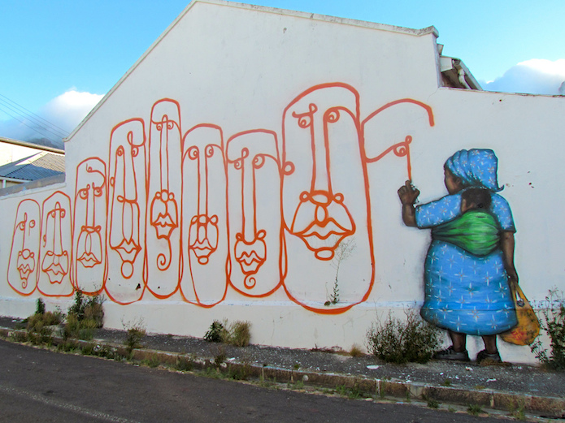

Open Government Partnership celebrates open innovation in Africa
As diverse delegates gather in Cape Town this week for the OGP regional meeting, we reflect on open innovation, ODI projects and promising initiatives in the continent

Street art in Cape Town, where delegates gather this week to promote open innovation for sustainable development. CC BY 2.0, uploaded by [tsn92 Follow](https://www.flickr.com/photos/guillaumeducros/5297881844/in/photolist-95a2Gq-fpY2dM-95a56h-6vTK22-yRz4Wf-7JEawL-5GRT7S-g46Ve-95773r-88Z7db-95a3J3-959X7h-8jzpq7-56xkip “tsn92 Follow").
By Tom Sasse and Anna Scott
This week, South Africa hosts the third Open Government Partnership (OGP) Africa Regional Meeting 2016. The two-day event brings together a wide range of delegates from African governments and civil society, startups and international organisations. It offers a platform to share lessons from programmes across the continent, with a particular focus on promoting sustainable development.
The OGP aims to secure concrete commitments from governments to promote transparency, empower citizens, fight corruption and harness new technologies to strengthen governance. Members subscribe to the principles of the Open Government Declaration and develop individual action plans to help achieve them in their regions.
The initiative launched in 2011 with eight members. Five years on, it now has 69. Seven African countries have joined so far: Kenya, Sierra Leone and Tunisia in the first cycle; Tanzania, Ghana, Liberia and South Africa in the second. Malawi and Cote D’Ivoire are currently developing action plans.
Two ODI team members, Jack Hardinges and Kateryna Onyiliogwu, are at the event to share the ODI’s experience supporting open data initiatives and meet with ODI Members, colleagues and partners from around the world.
"It is clear that the value of the Open Government Partnership is in bringing different actors together, from the governments themselves to those who use the open data they publish to create things that directly benefit citizens," says Jack. "When these actors work together – with responsive government and deep civil society engagement – it gives birth to the progress we have learned more about over the past two days."
Open innovation is gaining momentum across Africa
Governments across Africa are increasingly recognising the benefits that embracing open data and open innovation can bring. Many African countries have open data initiatives while the latest Open Data Barometer (OBD) research shows improvements in government transparency and accountability. Open Data for Africa is a hub for access to over 50 national data portals.
Through its work in Africa, the ODI is supporting this growing movement. In Tanzania, for example, we are helping to establish the Dar Open Data Lab (D-Lab), an innovation hub in Dar es-Salaam. D-Lab – a collaboration between SBC4D, the University of Dar es Salaam, IntraHealth International and the ODI – will provide a space dedicated to open innovation and help to connect government initiatives with communities of data users and civil society groups.
"With so much excitement around open data in Africa the timing for D-Lab is perfect," said Simon Bullmore, Head of Learning at the ODI, following a recent visit to Tanzania for the launch of the project.
"A lot of open data innovations are experienced on the Web, but they often start in physical spaces – spaces where people come together, learn from experts and each other, experiment and get support. That’s why we got involved. D-Lab will host ODI courses run by local experts and will also provide access to tools, desk space and community events. D-Lab’s online presence will feature training content in both English and Swahili. Importantly, East Africa’s open data champions will have a new place dedicated to helping them thrive."
Translating government will into real-world impacts
In providing a forum for interaction about open data, D-Lab follows the establishment of the Open Data Leaders Network (ODLN) last year – a peer network that enables open data leaders to share challenges and lessons. ODLN was designed to amplify evidence and ideas from the developing world about creating sustainable open data cultures, in order to allow context-specific solutions to emerge – and the evidence from the participants suggests the support is welcome. From Africa, so far Morocco, Burkina Faso, Nigeria and Tanzania are members of the network.
It is encouraging to see that the ODI’s work with partners in the continent is supporting progress that is being shared and learned from. "It has been great to hear the successes of Tanzania, Burkina Faso and Rwanda described in numerous sessions at the OGP meeting," says Kateryna, from the meeting in Cape Town. “It shows the significant impact of the ODI’s work in supporting open data initiatives and developing open data champions in the region.”
Regardless of their duration or scale, these projects share a common aim: fostering interaction in order to translate government will into progress on the ground. This remains a big challenge in Africa, even for the early adopters. The recent ODB report found that African countries – while demonstrating improvements in supply-side areas – continue to struggle to achieve impact on citizens’ lives through open data initiatives.
The focus on sustainable development at the OGP Africa meeting is therefore timely. By providing a forum for leaders to discuss how to increase the efficacy of open government projects in addressing the challenges Africa faces, it can act as an impetus. Taking the opportunity to share and learn from lessons will help the continent to keep momentum and pave the way for the social, economic and environmental benefits that open innovation can bring.
Tom Sasse is Services Intern and Anna Scott is Writer / Editor at the ODI.
If you have ideas or experience in open data that you'd like to share, pitch us a blog or tweet us at @ODIHQ.